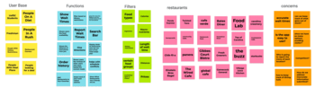
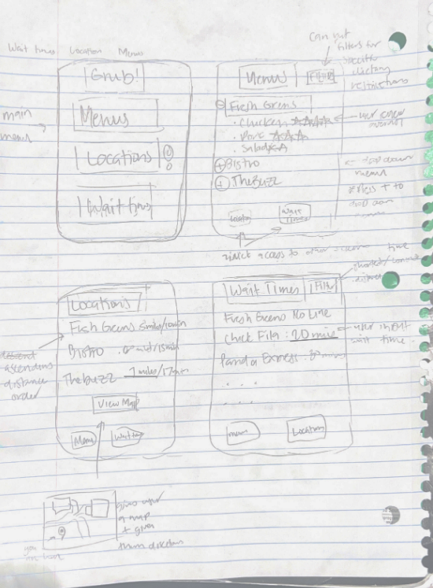
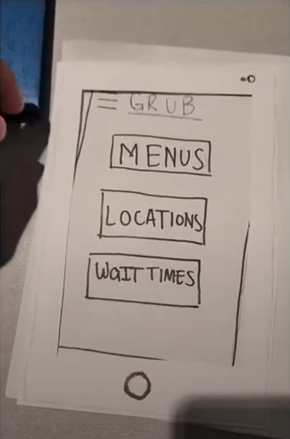
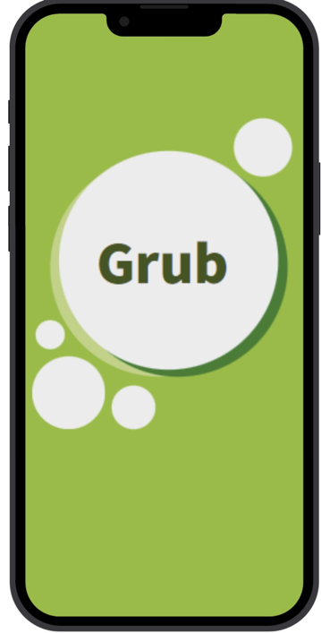

Problem Statement: Campus Food

UofSC Students are frustrated because they don't know which dining hall to eat due to the lack of a campus-wide menu as well as the lack of accurate wait times for restaurants. Users also struggle with finding a dining hall that can accommodate their dietary restrictions. Our solution should provide users with a way to find dining halls/restaurants that offer food that accommodates their needs as well as accurate wait times.
Affinity Diagram: Campus Food
Some ideas that our Grub group came up with to try to tackle the problem of campus food.
Persona: 4 Personas for Grub

A persona for a typical user of the Grub app.
Storyboard: Tess Marshall

A storyboard for the persona Tess Marshall.
Sketches
A rough draft of how the app would look like.
Paper Prototype
A paper version of the app's UX.
Hi-Fi Prototype: Grub App
A hi-fi prototype of the app.